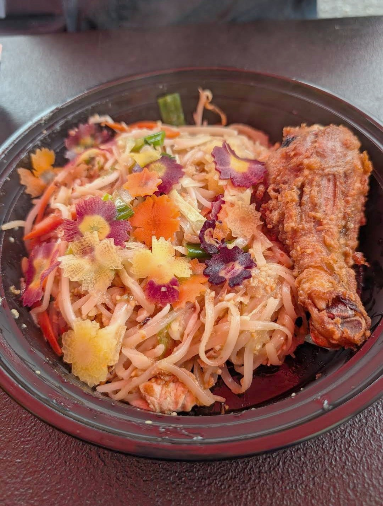
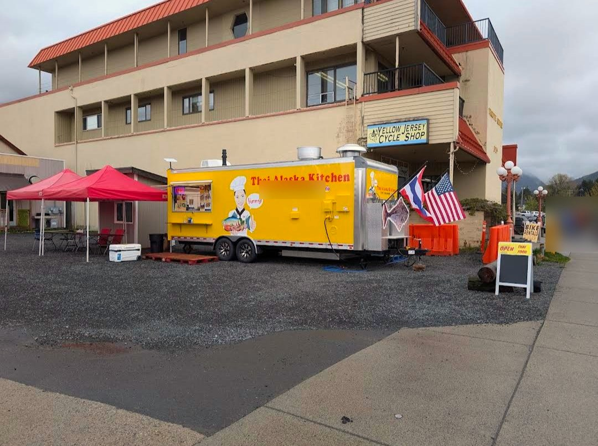

Thai Alaska Kitchen
Thai Food Truck
306 Lake St, Sitka, AK 99835
Rating: 5/5
Thai Alaska Kitchen serves some of the best Thai food I’ve had in Alaska. The panaang curry was incredibly flavorful—I could have happily finished a whole bowl on its own. The butterfly pea flower rice not only looks beautiful but adds something special to the meal. Everything is clearly made with love and attention to detail. Highly recommend checking them out!
Panaang Curry with Butterfly Pea Flower Rice · Noodle Bowl with a Fried Chicken Drumstick
About the place
Family-run Thai food truck owned by Mam and Canyon Lewis. It pairs traditional Thai cooking with local Alaskan seafood like salmon, halibut and black cod, and serves a rotating menu with takeout and catering. The truck operated behind the old Columbia Bar on Lincoln Street before moving to its current spot in May 2026.
What other diners say: Reviewers on Google and Yelp often call it some of the best Thai food they've had, praising the fresh, flavorful dishes (the panang curry comes up a lot), generous portions and warm owners. A few older Yelp reviews describe unfriendly service.
Sources: the Daily Sitka Sentinel, Visit Sitka, City of Sitka records, InstaHop (Google reviews) and MapQuest (Yelp). Summaries are paraphrased, not quotes.



Comments
Sign in with GitHub to leave a comment or reaction.